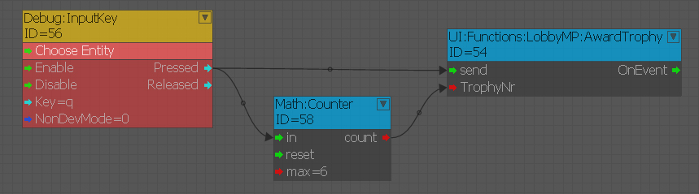
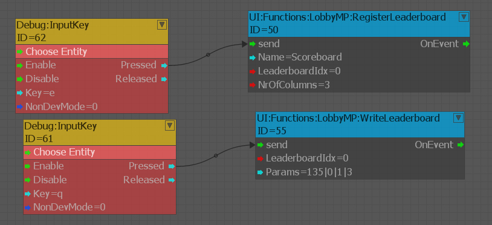
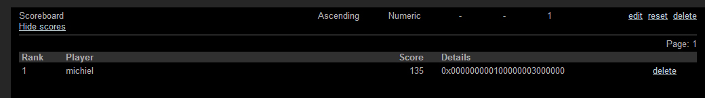
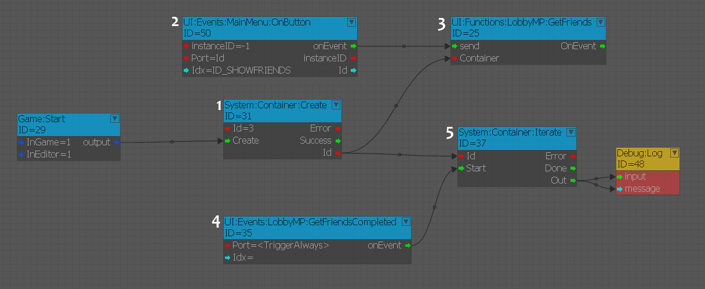

Обзор
В этой статье описаны некоторые встроенные функции Steam, включенные в модель подписки CRYENGINE EaaS.
Steam CVars
net_useSteamAsOnlineLobby
Установите значение 1, если вы хотите использовать Steam для онлайн-лобби/подбора игроков. Сюда также входит инициализация пользовательской статистики, достижений и таблиц лидеров.
Для этого необходимо иметь steam_api.dll или steam_api64.dll в папке bin, действительный AppID и запустить Steam с signed у пользователя, которому принадлежит этот AppID.
sys_steamAppId
Это appID, который будет использоваться программой запуска, когда включено сохранение в облаке или лобби. Значение по умолчанию — 0, appID у CRYENGINE — 220980, который вы можете использовать для тестирования основных функций (подробнее об этом ниже).
sys_useSteamCloudForPlatformSaving
Если для этого параметра установлено значение 1, данные профиля будут сохраняться и загружаться, а игры сохраняться в облаке.
net_steam_resetAchievements
Если установлено значение 1, движок попросит Steam сбросить все достижения для appID, что означает, что для этого пользователя больше не будет достигнутых достижений.
Поддерживаемые функции
На данный момент все перечисленные ниже функции доступны только в многопользовательском режиме игры (они работают за пределами онлайн-лобби). Также убедитесь, что контроллер заблокирован, чтобы мы знали, какого пользователя получить (Flownode: LockController).
Достижения
Достижения награждаются общим узлом «AwardTrophy».

Для приложения 220980 есть несколько примеров настроек достижений. Когда вы выполняете свои собственные достижения, обязательно измените сумму и имена в CrySteamReward.cpp. Индекс в EAchievements — это индекс, используемый в узле потока.
// Defining our achievements
enum EAchievements
{
Achievement1 = 0,
Achievement2,
Achievement3,
Achievement4,
Achievement5,
};
// Create the achievement buffer
CrySteamReward g_Achievements[] =
{
_ACH_ID( Achievement1, "Achievement1" ),
_ACH_ID( Achievement2, "Achievement2" ),
_ACH_ID( Achievement3, "Achievement3" ),
_ACH_ID( Achievement4, "Achievement4" ),
_ACH_ID( Achievement5, "Achievement5" ),
};Таблицы лидеров
Для appID 220980 есть пример таблицы лидеров под названием «Таблица», с помощью которой вы можете протестировать. Таблица лидеров Steam, как и любая другая таблица лидеров в CRYENGINE, работает через обобщенную систему.
Для начала вам необходимо зарегистрировать таблицу лидеров. Хорошим примером для быстрого начала работы является узел Registerleaderboard. Заполните имя и индекс. В зависимости от серверной настройки и платформы имеет значение либо имя, либо индекс.
В случае со Steam правильным должно быть только имя, индекс можно выбрать по вашему выбору. После регистрации таблицы лидеров вы можете начать читать из нее и писать в нее, ниже приведен пример, где в нее была записана информация.

Вот результат в серверной части Steam: столбец оценок заполнен, а пользовательские столбцы сжаты и сохранены в «дополнительном» столбце (0, 1 и 3).

Сватовство
Когда net_useSteamAsOnlineLobby установлено значение 1, онлайн-лобби будет использовать Steam для подбора игроков. Это означает, что вы можете создавать комнаты и искать их, а также получать приглашения в них через CRYENGINE или через Steam (на панели друзей).
Облачное сохранение
Когда sys_useSteamCloudForPlatformSaving установлено значение 1, сохраненные игры и данные профиля будут храниться в облаке. Текущая настройка для 220980 — максимум 100 файлов с квотой 10 MB.
Он сохранит и загрузит данные профиля, а также сохранит игры в облаке, а не в папке пользователя. Папку Steam Cloud можно найти в C:\Program Files(x86)\Steam\userdata\<SteamUserID>\<SteamAppID>\remote\
Когда это включено, вызовы GetISystem()->GetPlatformOS->GetSaveReader() и GetSaveWriter() вместо этого вернут устройство чтения/записи для облака Steam.
Если вы достигнете лимита файлов, вам придется позвонить sys_wipeSteamCloud для удаления файлов из облака — на данный момент вы не можете указать отдельные файлы для удаления.
Статистика пользователя
Статистику, доступную в Интернете, можно найти в: <GameFolder>\Scripts\Network\OnlineAttributes.xml
Узлы потока PlayerProfile:ProfileAttribute и PlayerProfile:OnlineAttributes являются хорошей отправной точкой для понимания того, как работать со значениями этих атрибутов.
Когда вызываются LoadOnlineAttributes и SaveOnlineAttributes, они загружают и сохраняют значения, установленные в профиле игрока, в серверную часть Steam, которые будут постоянными.
Друзья
Есть несколько узлов, которые дают вам быстрый доступ к друзьям. Используйте их в качестве справочной информации при создании собственных функций друзей, поскольку узел может слишком сильно ограничивать вас. 
Сначала мы создаем контейнер (1) для хранения данных. Затем, когда пользователь нажимал кнопку (2), мы просили систему выбрать друзей и сохранить их в контейнере (3).
GetFriendsCompleted — это событие обратного вызова для GetFriends, что означает, что выборка завершена (4). Затем просто переберите данные и выведите результат.
pFriends->FriendsGetFriendsList(user, 0, 10, NULL, CUILobbyMP::GetFriendsCB, (void*)containerIdx);Это самая важная строка, связанная с поиском друзей. Обратите внимание на 0 и 10 — это начало списка и максимальное количество друзей, которых вы хотите захватить.